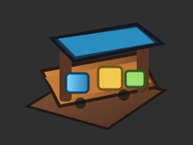
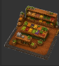
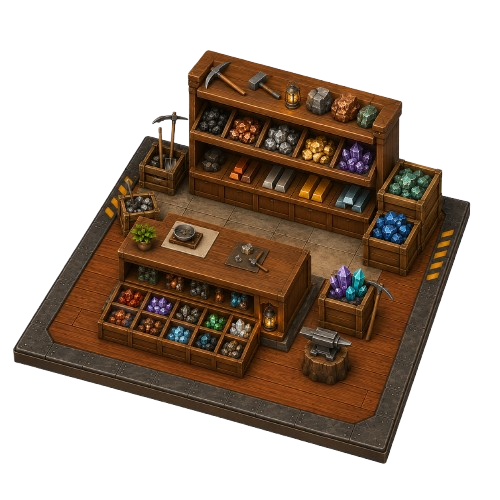
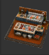
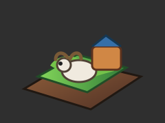

Essential
상점
상점 루트
상점은 생산과 공정을 거친 물건을 손님에게 판매하는 시설입니다.
자원 매대는 재료를 판매하고, 전문 매대는 완성된 세트 상품을 판매합니다.

프로덕트 매대
공장에서 완성된 세트 상품을 판매하는 기본 매대입니다.
취급 품목 보기 (77개)
| 번호 | 품목 |
|---|---|
| 1 | StarterFurnitureSet(1st) |
| 2 | BasicFurnitureSet(2nd) |
| 3 | BedroomFurnitureSet(3rd) |
| 4 | WorkFurnitureSet(4th) |
| 5 | LivingFurnitureSet(5th) |
| 6 | FamilyFurnitureSet(6th) |
| 7 | UltimateFurnitureSet(7th) |
| 8 | StarterCleaningSet(1st) |
| 9 | BasicCleaningSet(2nd) |
| 10 | PowerCleaningSet(3rd) |
| 11 | AutoCleaningSet(4th) |
| 12 | DeepCleaningSet(5th) |
| 13 | SmartCleaningSet(6th) |
| 14 | UltimateCleaningSet(7th) |
| 15 | StarterCookingSet(1st) |
| 16 | BasicCookingSet(2nd) |
| 17 | HeatCookingSet(3rd) |
| 18 | ConvenienceCookingSet(4th) |
| 19 | ProcessCookingSet(5th) |
| 20 | AutoCookingSet(6th) |
| 21 | UltimateCookingSet(7th) |
| 22 | StarterClimateSet(1st) |
| 23 | BasicClimateSet(2nd) |
| 24 | ControlClimateSet(3rd) |
| 25 | CleanClimateSet(4th) |
| 26 | SensingClimateSet(5th) |
| 27 | SmartClimateSet(6th) |
| 28 | UltimateClimateSet(7th) |
| 29 | BeginnerBandSet(1st) |
| 30 | GarageBandSet(2nd) |
| 31 | LiveBandSet(3rd) |
| 32 | PerformanceBandSet(4th) |
| 33 | ShowBandSet(5th) |
| 34 | DeluxeBandSet(6th) |
| 35 | GoldenBandSet(7th) |
| 36 | BeginnerFitnessSet(1st) |
| 37 | BasicFitnessSet(2nd) |
| 38 | StrengthFitnessSet(3rd) |
| 39 | PowerFitnessSet(4th) |
| 40 | EliteFitnessSet(5th) |
| 41 | MasterFitnessSet(6th) |
| 42 | GoldenFitnessSet(7th) |
| 43 | BeginnerLunchbox(1st) |
| 44 | WildflowerLunchbox(2nd) |
| 45 | SunshineLunchbox(3rd) |
| 46 | PicnicLunchbox(4th) |
| 47 | ExcursionLunchbox(5th) |
| 48 | DeluxePicnicLunchbox(6th) |
| 49 | GoldenPicnicLunchbox(7th) |
| 50 | BeginnerSteakSet(1st) |
| 51 | HerbSteakSet(2nd) |
| 52 | ClassicSteakSet(3rd) |
| 53 | GrillSteakSet(4th) |
| 54 | PremiumSteakSet(5th) |
| 55 | DeluxeSteakSet(6th) |
| 56 | GoldenSteakSet(7th) |
| 57 | BeginnerKoreanSet(1st) |
| 58 | WildKoreanSet(2nd) |
| 59 | SunshineKoreanSet(3rd) |
| 60 | PicnicKoreanSet(4th) |
| 61 | ExcursionKoreanSet(5th) |
| 62 | DeluxeKoreanSet(6th) |
| 63 | GoldenKoreanSet(7th) |
| 64 | BeginnerChineseSet(1st) |
| 65 | WildChineseSet(2nd) |
| 66 | SunshineChineseSet(3rd) |
| 67 | PicnicChineseSet(4th) |
| 68 | ExcursionChineseSet(5th) |
| 69 | DeluxeChineseSet(6th) |
| 70 | GoldenChineseSet(7th) |
| 71 | BeginnerSeafoodSet(1st) |
| 72 | WildSeafoodSet(2nd) |
| 73 | SunshineSeafoodSet(3rd) |
| 74 | PicnicSeafoodSet(4th) |
| 75 | ExcursionSeafoodSet(5th) |
| 76 | DeluxeSeafoodSet(6th) |
| 77 | GoldenSeafoodSet(7th) |

농산물 매대
농장과 숲 계열에서 얻은 과일, 채소, 곡물 자원을 판매합니다.
취급 품목 보기 (61개)
| 번호 | 품목 |
|---|---|
| 1 | Apple |
| 2 | Apricot |
| 3 | Banana |
| 4 | Blackberry |
| 5 | Starfruit |
| 6 | Cherry |
| 7 | Coconut |
| 8 | Dragon fruit |
| 9 | Feijoa |
| 10 | Fig |
| 11 | Garnet |
| 12 | Grape |
| 13 | Grapefruit |
| 14 | Kiwi |
| 15 | Lemon |
| 16 | Lime |
| 17 | Lychee |
| 18 | Mango |
| 19 | Melon |
| 20 | Nectarine |
| 21 | Orange |
| 22 | Papaya |
| 23 | Peach |
| 24 | Pear |
| 25 | Pineapple |
| 26 | Plum |
| 27 | Raspberry |
| 28 | Strawberry |
| 29 | Tangerine |
| 30 | Watermelon |
| 31 | Asparagus |
| 32 | Avocado |
| 33 | Beet |
| 34 | Broccoli |
| 35 | Cabbage |
| 36 | Carrots |
| 37 | Corn |
| 38 | Cucumber |
| 39 | Eggplant |
| 40 | Garlic |
| 41 | Horseradish |
| 42 | Leek |
| 43 | Mushroom |
| 44 | Onion |
| 45 | Pea |
| 46 | Pepper |
| 47 | Potato |
| 48 | Pumpkin |
| 49 | Radish |
| 50 | Squash |
| 51 | Tomato |
| 52 | Wheat |
| 53 | Zucchini |
| 54 | Cinnamon |
| 55 | Kakao |
| 56 | SugarCane |
| 57 | Bean |
| 58 | RicePlant |
| 59 | Jujube |
| 60 | Citron |
| 61 | Ginger |

광석 매대
광산과 동굴에서 얻은 광석, 금속 재료를 판매합니다.
취급 품목 보기 (31개)
| 번호 | 품목 |
|---|---|
| 1 | AdamantiteOre |
| 2 | BronziteOre |
| 3 | GildronOre |
| 4 | FerrosOre |
| 5 | MeteoriticOre |
| 6 | MytheriumOre |
| 7 | RunestoneOre |
| 8 | SilvariteOre |
| 9 | GoldOre |
| 10 | LunasilverOre |
| 11 | AdamirOre |
| 12 | BronziumOre |
| 13 | AuricOre |
| 14 | FerranOre |
| 15 | VoidrockOre |
| 16 | MythriteOre |
| 17 | RunariteOre |
| 18 | SilliumOre |
| 19 | AdramOre |
| 20 | BronzarkOre |
| 21 | GoldrethOre |
| 22 | CopperOre |
| 23 | SilverOre |
| 24 | MythrialOre |
| 25 | RunethOre |
| 26 | SilvenOre |
| 27 | MithradenOre |
| 28 | MetalIngot |
| 29 | MetalPlate |
| 30 | MetalRod |
| 31 | Rubber |

생선 매대
연못과 바다에서 얻은 수산 자원을 판매합니다.
취급 품목 보기 (60개)
| 번호 | 품목 |
|---|---|
| 1 | GreenSnapper |
| 2 | StripedPike |
| 3 | RedGurnard |
| 4 | JungleFish |
| 5 | TigerMinnow |
| 6 | ChubbyIcefish |
| 7 | BlobAngler |
| 8 | BlueGoby |
| 9 | SpottedGrouper |
| 10 | SilverPompano |
| 11 | Steelhead |
| 12 | CrimsonBream |
| 13 | NightDarter |
| 14 | LimePerch |
| 15 | SkyTuna |
| 16 | PinkSeabass |
| 17 | BlueMackerel |
| 18 | CrimsonRockfish |
| 19 | FlameTang |
| 20 | BrownBarracuda |
| 21 | NeedleSardine |
| 22 | LavenderTrout |
| 23 | ShortfinMarlin |
| 24 | OceanTuna |
| 25 | GhostPomfret |
| 26 | DuskyWhiting |
| 27 | OliveSunfish |
| 28 | BigeyeGrouper |
| 29 | ZebraCatfish |
| 30 | GoldenBass |
| 31 | AquaSnapper |
| 32 | ShadowPike |
| 33 | BloodCarp |
| 34 | SunstripedGoby |
| 35 | BubbleGill |
| 36 | LimePuffer |
| 37 | Coralfin |
| 38 | RedDottyback |
| 39 | Fogfish |
| 40 | IceMackerel |
| 41 | CherryBream |
| 42 | Deepshade |
| 43 | LeafBream |
| 44 | SkyDace |
| 45 | TealPout |
| 46 | CobaltGuppy |
| 47 | ScarletBass |
| 48 | Firetail |
| 49 | Needlenose |
| 50 | Streamfin |
| 51 | Lavenderfin |
| 52 | Silverspine |
| 53 | Bluefang |
| 54 | AshDart |
| 55 | PalePuffer |
| 56 | OlivePerch |
| 57 | Poppyfish |
| 58 | DuskyGoby |
| 59 | GoldenPuffer |
| 60 | Fillet |

목장 매대
목장에서 얻은 동물, 축산물, 가공 재료를 판매합니다.
취급 품목 보기 (47개)
| 번호 | 품목 |
|---|---|
| 1 | ArcticFox |
| 2 | Ox |
| 3 | Penguin |
| 4 | PolarBear |
| 5 | Reindeer |
| 6 | SeaLion |
| 7 | SnowOwl |
| 8 | SnowWeasel |
| 9 | Walrus |
| 10 | Buffalo |
| 11 | Chick |
| 12 | Cow |
| 13 | Donkey |
| 14 | Duck |
| 15 | Hen |
| 16 | Pig |
| 17 | Rooster |
| 18 | Sheep |
| 19 | Crow |
| 20 | Eagle |
| 21 | Fox |
| 22 | Hog |
| 23 | Hornbill |
| 24 | Owl |
| 25 | Raccoon |
| 26 | Snake |
| 27 | Wolf |
| 28 | Cat |
| 29 | Dog |
| 30 | Dove |
| 31 | Goldfish |
| 32 | Mouse |
| 33 | Parrot |
| 34 | Pigeon |
| 35 | Rabbit |
| 36 | Tortoise |
| 37 | Meat |
| 38 | Ham |
| 39 | Milk |
| 40 | Cream |
| 41 | Butter |
| 42 | Egg |
| 43 | Wool |
| 44 | Fur |
| 45 | Feather |
| 46 | Leather |
| 47 | Honey |

음식 매대
고급 조리기에서 완성된 음식 세트만 판매합니다.
취급 품목 보기 (35개)
| 번호 | 품목 |
|---|---|
| 1 | BeginnerLunchbox(1st) |
| 2 | WildflowerLunchbox(2nd) |
| 3 | SunshineLunchbox(3rd) |
| 4 | PicnicLunchbox(4th) |
| 5 | ExcursionLunchbox(5th) |
| 6 | DeluxePicnicLunchbox(6th) |
| 7 | GoldenPicnicLunchbox(7th) |
| 8 | BeginnerSteakSet(1st) |
| 9 | HerbSteakSet(2nd) |
| 10 | ClassicSteakSet(3rd) |
| 11 | GrillSteakSet(4th) |
| 12 | PremiumSteakSet(5th) |
| 13 | DeluxeSteakSet(6th) |
| 14 | GoldenSteakSet(7th) |
| 15 | BeginnerKoreanSet(1st) |
| 16 | WildKoreanSet(2nd) |
| 17 | SunshineKoreanSet(3rd) |
| 18 | PicnicKoreanSet(4th) |
| 19 | ExcursionKoreanSet(5th) |
| 20 | DeluxeKoreanSet(6th) |
| 21 | GoldenKoreanSet(7th) |
| 22 | BeginnerChineseSet(1st) |
| 23 | WildChineseSet(2nd) |
| 24 | SunshineChineseSet(3rd) |
| 25 | PicnicChineseSet(4th) |
| 26 | ExcursionChineseSet(5th) |
| 27 | DeluxeChineseSet(6th) |
| 28 | GoldenChineseSet(7th) |
| 29 | BeginnerSeafoodSet(1st) |
| 30 | WildSeafoodSet(2nd) |
| 31 | SunshineSeafoodSet(3rd) |
| 32 | PicnicSeafoodSet(4th) |
| 33 | ExcursionSeafoodSet(5th) |
| 34 | DeluxeSeafoodSet(6th) |
| 35 | GoldenSeafoodSet(7th) |

조리 장비 매대
조리 장비 세트만 판매하는 매대입니다.
취급 품목 보기 (7개)
| 번호 | 품목 |
|---|---|
| 1 | StarterCookingSet(1st) |
| 2 | BasicCookingSet(2nd) |
| 3 | HeatCookingSet(3rd) |
| 4 | ConvenienceCookingSet(4th) |
| 5 | ProcessCookingSet(5th) |
| 6 | AutoCookingSet(6th) |
| 7 | UltimateCookingSet(7th) |

청소 매대
청소 장비 세트만 판매하는 매대입니다.
취급 품목 보기 (7개)
| 번호 | 품목 |
|---|---|
| 1 | StarterCleaningSet(1st) |
| 2 | BasicCleaningSet(2nd) |
| 3 | PowerCleaningSet(3rd) |
| 4 | AutoCleaningSet(4th) |
| 5 | DeepCleaningSet(5th) |
| 6 | SmartCleaningSet(6th) |
| 7 | UltimateCleaningSet(7th) |

기후 매대
기후 장비 세트만 판매하는 매대입니다.
취급 품목 보기 (7개)
| 번호 | 품목 |
|---|---|
| 1 | StarterClimateSet(1st) |
| 2 | BasicClimateSet(2nd) |
| 3 | ControlClimateSet(3rd) |
| 4 | CleanClimateSet(4th) |
| 5 | SensingClimateSet(5th) |
| 6 | SmartClimateSet(6th) |
| 7 | UltimateClimateSet(7th) |

운동 매대
운동 장비 세트만 판매하는 매대입니다.
취급 품목 보기 (7개)
| 번호 | 품목 |
|---|---|
| 1 | BeginnerFitnessSet(1st) |
| 2 | BasicFitnessSet(2nd) |
| 3 | StrengthFitnessSet(3rd) |
| 4 | PowerFitnessSet(4th) |
| 5 | EliteFitnessSet(5th) |
| 6 | MasterFitnessSet(6th) |
| 7 | GoldenFitnessSet(7th) |

가구 매대
가구 세트만 판매하는 매대입니다.
취급 품목 보기 (7개)
| 번호 | 품목 |
|---|---|
| 1 | StarterFurnitureSet(1st) |
| 2 | BasicFurnitureSet(2nd) |
| 3 | BedroomFurnitureSet(3rd) |
| 4 | WorkFurnitureSet(4th) |
| 5 | LivingFurnitureSet(5th) |
| 6 | FamilyFurnitureSet(6th) |
| 7 | UltimateFurnitureSet(7th) |

산업 매대
고급 공정에서 완성된 세트 상품만 판매하는 매대입니다.
취급 품목 보기 (77개)
| 번호 | 품목 |
|---|---|
| 1 | StarterFurnitureSet(1st) |
| 2 | BasicFurnitureSet(2nd) |
| 3 | BedroomFurnitureSet(3rd) |
| 4 | WorkFurnitureSet(4th) |
| 5 | LivingFurnitureSet(5th) |
| 6 | FamilyFurnitureSet(6th) |
| 7 | UltimateFurnitureSet(7th) |
| 8 | StarterCleaningSet(1st) |
| 9 | BasicCleaningSet(2nd) |
| 10 | PowerCleaningSet(3rd) |
| 11 | AutoCleaningSet(4th) |
| 12 | DeepCleaningSet(5th) |
| 13 | SmartCleaningSet(6th) |
| 14 | UltimateCleaningSet(7th) |
| 15 | StarterCookingSet(1st) |
| 16 | BasicCookingSet(2nd) |
| 17 | HeatCookingSet(3rd) |
| 18 | ConvenienceCookingSet(4th) |
| 19 | ProcessCookingSet(5th) |
| 20 | AutoCookingSet(6th) |
| 21 | UltimateCookingSet(7th) |
| 22 | StarterClimateSet(1st) |
| 23 | BasicClimateSet(2nd) |
| 24 | ControlClimateSet(3rd) |
| 25 | CleanClimateSet(4th) |
| 26 | SensingClimateSet(5th) |
| 27 | SmartClimateSet(6th) |
| 28 | UltimateClimateSet(7th) |
| 29 | BeginnerBandSet(1st) |
| 30 | GarageBandSet(2nd) |
| 31 | LiveBandSet(3rd) |
| 32 | PerformanceBandSet(4th) |
| 33 | ShowBandSet(5th) |
| 34 | DeluxeBandSet(6th) |
| 35 | GoldenBandSet(7th) |
| 36 | BeginnerFitnessSet(1st) |
| 37 | BasicFitnessSet(2nd) |
| 38 | StrengthFitnessSet(3rd) |
| 39 | PowerFitnessSet(4th) |
| 40 | EliteFitnessSet(5th) |
| 41 | MasterFitnessSet(6th) |
| 42 | GoldenFitnessSet(7th) |
| 43 | BeginnerLunchbox(1st) |
| 44 | WildflowerLunchbox(2nd) |
| 45 | SunshineLunchbox(3rd) |
| 46 | PicnicLunchbox(4th) |
| 47 | ExcursionLunchbox(5th) |
| 48 | DeluxePicnicLunchbox(6th) |
| 49 | GoldenPicnicLunchbox(7th) |
| 50 | BeginnerSteakSet(1st) |
| 51 | HerbSteakSet(2nd) |
| 52 | ClassicSteakSet(3rd) |
| 53 | GrillSteakSet(4th) |
| 54 | PremiumSteakSet(5th) |
| 55 | DeluxeSteakSet(6th) |
| 56 | GoldenSteakSet(7th) |
| 57 | BeginnerKoreanSet(1st) |
| 58 | WildKoreanSet(2nd) |
| 59 | SunshineKoreanSet(3rd) |
| 60 | PicnicKoreanSet(4th) |
| 61 | ExcursionKoreanSet(5th) |
| 62 | DeluxeKoreanSet(6th) |
| 63 | GoldenKoreanSet(7th) |
| 64 | BeginnerChineseSet(1st) |
| 65 | WildChineseSet(2nd) |
| 66 | SunshineChineseSet(3rd) |
| 67 | PicnicChineseSet(4th) |
| 68 | ExcursionChineseSet(5th) |
| 69 | DeluxeChineseSet(6th) |
| 70 | GoldenChineseSet(7th) |
| 71 | BeginnerSeafoodSet(1st) |
| 72 | WildSeafoodSet(2nd) |
| 73 | SunshineSeafoodSet(3rd) |
| 74 | PicnicSeafoodSet(4th) |
| 75 | ExcursionSeafoodSet(5th) |
| 76 | DeluxeSeafoodSet(6th) |
| 77 | GoldenSeafoodSet(7th) |

음악 매대
음악 장비 세트만 판매하는 매대입니다.
취급 품목 보기 (7개)
| 번호 | 품목 |
|---|---|
| 1 | BeginnerBandSet(1st) |
| 2 | GarageBandSet(2nd) |
| 3 | LiveBandSet(3rd) |
| 4 | PerformanceBandSet(4th) |
| 5 | ShowBandSet(5th) |
| 6 | DeluxeBandSet(6th) |
| 7 | GoldenBandSet(7th) |